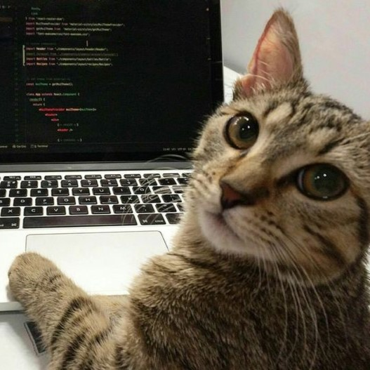
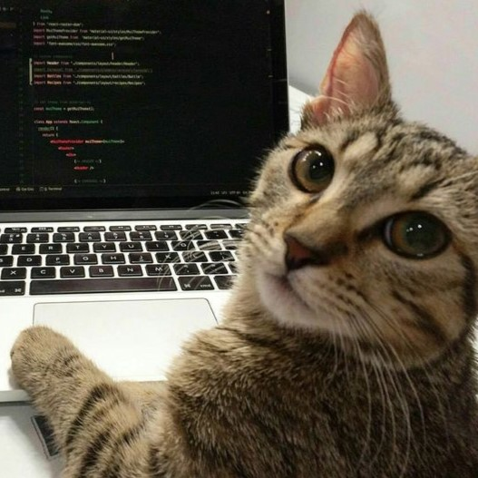

Yo viendo como me esforcé por realizar esta página y tú no interactúas con ella.
Yo viendo como me esforcé por realizar esta página y tú no interactúas con ella.
¿Te gusta la música?
¿Asistes regularmente a conciertos o festivales de música?
¿Cuántas horas a la semana dedicas a escuchar música?
¿Tocas algún instrumento musical?
¿Qué género musical prefieres escuchar con mayor frecuencia?
{{ mensajeLimite }}
¿Cuál es tu artista o banda favorita?
{{ mensajeLimite }}
¿Qué canción recomendarías escuchar a alguien que aún no conoce tu género favorito?
{{ mensajeLimite }}
¿Te gusta la música? {{ respuesta1 }}
¿Asistes regularmente a conciertos o festivales de música? {{ respuesta2 }}
¿Cuántas horas a la semana dedicas a escuchar música? {{ respuesta3 }}
¿Tocas algún instrumento musical? {{ respuesta4 }}
Géneros musicales preferidos:
Artistas o bandas favoritas:
Canciones recomendadas: